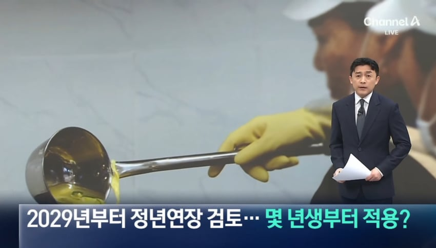
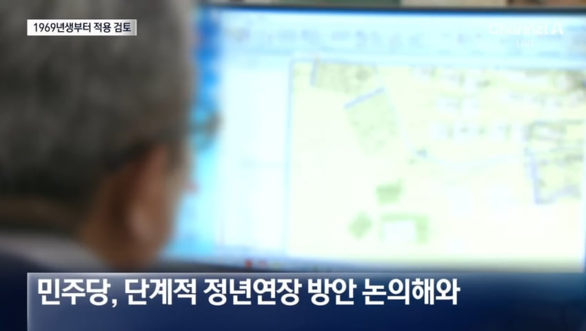
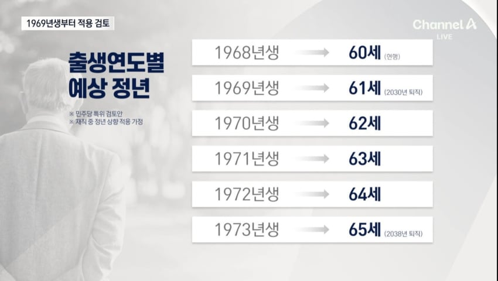
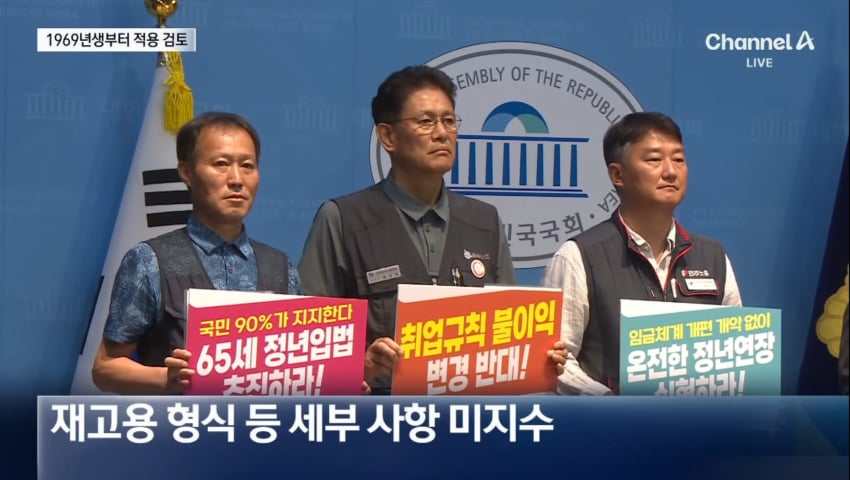
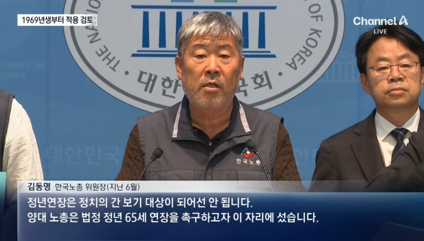
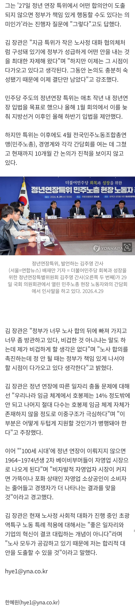
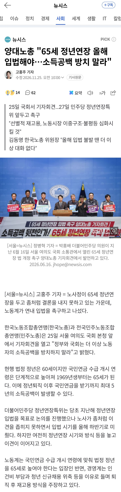
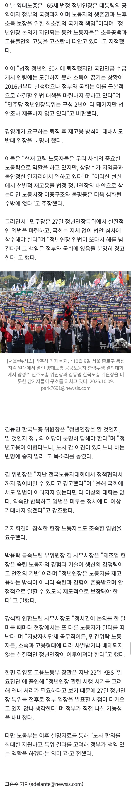
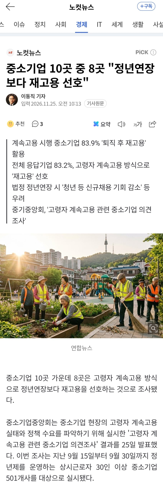
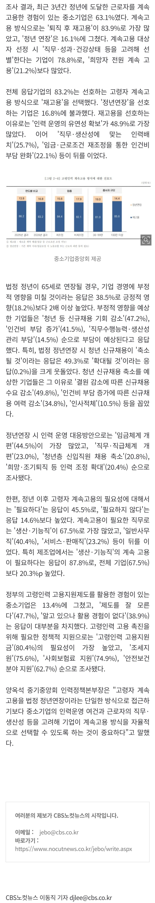

현재 정년 나이는 60세죠.
이걸 65세로 연장하는 안, 정부와 여당의 결론이
가까워지는 듯 합니다.
3년 뒤, 즉 2029년부터 단계별로 시작하는 방안이 검토되는데
몇 년생부터 적용될까요?
자세한 내용, 우현기 기자가 취재했습니다.
다가오는 27일이 정년 연장 논의의 분수령이 될 전망입니다.
김영훈 고용노동부 장관이 오늘 27일로 예정된
민주당 정년 연장 특위를 전후로
정부 입장을 발표할 시점이 다가오고 있지 않나 생각한다며
정부가 책임 있게 방안을 마련하는 것이 도리라고 밝힌겁니다.

저출산 고령화 추세에 따라
생산 가능 인구가 줄어들 것으로 예상되자
민주당 정년 연장 특위는 그간 현행 60세인 법정 정년을
단계적으로 늘리는 방안을 논의해 왔습니다.
검토된 안 중 하나는 2029년부터 2037년까지
2년마다 정년을 한 살씩 늘리는 겁니다.

이 방안대로라면 1968년생은 현행 60세 정년이 적용되고
1969년생부터 정년이 1년 연장됩니다.
근무 중에 변경된 정년이 계속 적용된다고 가정한다면
1973년생부터는 65세까지 일할 수 있다는 계산이 나옵니다.

다만 최종 확정 안은 아닌데다
퇴직 후 재고용 형식도 고려되고 있는 등
세부적인 사항이 아직 미지수입니다.

양대 노총은 연내 입법을 촉구하고 있습니다.
다만 오늘 고용노동부는
김 장관 발언에 대해 특위에서 결론이 나지 않으면
정부 안을 발표한다는 뜻은 아니라며 특위 결과를 감안해
청년 일자리 지원 등 책임 있는 역할을 다하겠다는 의미라고
설명했습니다.
채널A 뉴스 우현기입니다.





노동장관 "정년연장, 27일 與 특위서 결론 안 나면 정부안 발표".gisa
양대노총 "65세 정년연장 올해 입법해야…소득공백 방치 말라".gisa
댓글
수집 당시 댓글 234개
모Y샀다가대가리깨진다 · 11.27 01:05:21
· ㅇㅇ · 11.27 15:16:53
ㅇㅇ · 11.27 01:52:28
ㅇㅇ · 11.27 01:52:32
ㅇㅇ · 11.27 01:55:34
좆팔육의 좆팔육을 위한정권
ㅇㅇ · 11.27 02:03:15
ㅇㅇ · 11.27 02:03:21
ㅇㅇ · 11.27 02:17:59
ㅇㅇ · 11.27 02:20:15
ㅇㅇ · 11.27 02:28:20
ㅇㅇ · 11.27 02:45:53
ㅇㅇ · 11.27 03:11:54
· ㅇㅇ · 11.27 03:12:06
ㅇㅇ · 11.27 03:59:23
ㅇㅇ · 11.27 04:20:42
· ㅇㅇ · 11.27 04:20:54
ㅇㅇ · 11.27 04:29:12
· ㅇㅇ · 11.27 04:37:24
ㅇㅇ · 11.27 04:53:42
ㅇㅇ · 11.27 04:54:08
ㅇㅇ · 11.27 05:27:42
ㅇㅇ · 11.27 05:36:44
ㅇㅇ · 11.27 05:55:42
ㅇㅇ · 11.27 05:57:48
ㅇㅇ · 11.27 06:07:56
ㅇㅇ · 11.27 06:14:02
ㅇㅇ · 11.27 06:26:20
ㅇㅇ · 11.27 06:39:12
ㅇㅇㅇ · 11.27 07:02:23
ㅇㅇ · 11.27 07:06:55
도떼녀 · 11.27 07:09:00
도떼녀 · 11.27 07:09:53
ㅇㅇ · 11.27 07:29:52
ㅇㅇ · 11.27 07:38:32
삥뽕딱 · 11.27 07:47:09
ㅇㅇ · 11.27 07:59:22
ㅇㅇ · 11.27 07:59:28
ㅇㅇ · 11.27 08:06:46
ㅇㅇ · 11.27 08:12:08
ㅇㅇ · 11.27 08:38:35
ORZ · 11.27 08:47:46
민생회복쿠폰 · 11.27 08:48:14
ㅇㅇ · 11.27 08:58:01
ㅇㅇ · 11.27 09:09:11
ㅇㅇ · 11.27 09:10:27
ㅇㅇ · 11.27 09:15:50
ㅇㅇ · 11.27 09:32:54
ㅇㅅ · 11.27 09:35:17
ㅇㅇ · 11.27 09:47:29
· ㅇㅇ · 11.27 09:49:47
· ㅇㅇ · 11.27 15:14:48
ㅇㅇㅇ · 11.27 09:49:00
ㅇㅇ · 11.27 10:01:32
ㅇㅇ · 11.27 10:01:52
ㅇㅇ · 11.27 10:09:10
ㅇㅇ · 11.27 10:09:12
ㅇㅇ · 11.27 10:15:01
주소킹 · 11.27 10:28:40
· 주소킹 · 11.27 10:28:46
타이밍뒷통수한방 · 11.27 10:33:13
ㄹㄹ · 11.27 10:35:19
ㅇㅇ · 11.27 10:49:33
· ㅇㅇ · 11.27 10:49:40
슈퍼지구민주투사 · 11.27 10:55:28
o o · 11.27 11:05:29
ㅇㅇ · 11.27 11:49:34
ㅇㅇ · 11.27 12:30:10
ㅇㅇ · 11.27 12:34:49
ㅇㅇ · 11.27 12:50:14
ㅇㅇ · 11.27 13:01:00
ㅇㅇ · 11.27 13:09:52
삭제됨 · 11.27 13:15:40
· ㅇㅇ · 11.27 13:15:50
ㅇㅇ · 11.27 13:47:07
ㅇㅇ · 11.27 13:56:04
· ㅇㅇ · 11.27 13:56:16
ㅇㅇ · 11.27 13:59:19
ㅇㅇ · 11.27 14:13:09
ㅇㅇ · 11.27 14:13:10
국민 연금
ㅇㅇ · 11.27 14:13:35
75세 부터
ㅇㅇ · 11.27 14:14:18
받아라 ㅋㅋㅋ
ㅇㅇ · 11.27 14:24:54
· qkfpt · 11.27 17:25:46
미쳐 · 11.27 14:33:26
12 · 11.27 14:46:30
ㅇㅇ · 11.27 15:08:41
ㅇㅇ · 11.27 15:11:01
ㅇㅇ · 11.27 15:16:12
ㅇㅇ · 11.27 15:19:12
ㅇㅇ · 11.27 15:24:00
ㅇㅇ · 11.27 15:28:30
ㅇㅇ · 11.27 15:37:50
퓨번 · 11.27 15:38:31
무한탐구 · 11.27 15:56:56
카루짱 · 11.27 16:08:42
qkfpt · 11.27 17:24:59
· qkfpt · 11.27 17:25:09
· ㅇㅇ · 11.27 17:52:05
· qkfpt · 11.27 17:56:22
ㅇㅇ · 11.27 17:57:47
· ㅇㅇ · 11.27 00:23:24
ㅇㅇ · 11.26 23:37:27
ㅇㅇ · 11.26 23:37:53
ㅇㅇ · 11.26 23:38:23
ㅇㅇ · 11.26 23:38:50
ㅇㅇ · 11.26 23:38:55
개꿀자리 절대 안넘겨
줄려고
ㅇㅇ · 11.26 23:39:02
나너나 · 11.26 23:39:53
ㅇㅇ · 11.26 23:39:55
ㅇㅇ · 11.26 23:40:06
ㅇㅇ · 11.26 23:40:18
· ㅇㅇ · 11.26 23:40:42
· ㅇㅇ · 11.27 00:40:29
· ㅇㅇ · 11.27 09:46:42
ㅇㅇ · 11.26 23:40:33
ㅇㅇ · 11.26 23:40:48
ㅇㅇ · 11.26 23:40:56
ㅇㅇ · 11.26 23:41:12
히이잉 · 11.26 23:41:19
ㅇㅇ · 11.26 23:41:26
· ㅇㅇ · 11.26 23:45:43
· ㅇㅇ · 11.27 00:12:27
· ㅇㅇ · 11.27 02:23:58
ㅇㅇ · 11.26 23:41:34
ㅇㅇ · 11.26 23:43:08
ㅇㅇ · 11.26 23:43:44
ㅇㅇ · 11.26 23:43:49
ㅇㅇ · 11.26 23:43:55
ㅇㅇ · 11.26 23:43:56
ㅇㅇ · 11.26 23:44:01
ㅇㅇ · 11.26 23:44:08
ㅇㅇ · 11.26 23:44:17
ㅇㅇ · 11.26 23:44:27
ㅇㅇ · 11.26 23:44:39
ㅇㅇ · 11.26 23:44:54
ㅇㅇ · 11.26 23:45:07
ㅇㅇ · 11.26 23:45:23
ㅇㅇ · 11.26 23:45:35
· ㅇㅇ · 11.26 23:53:36
· ㅇㅇ · 11.27 00:03:23
· ㅇㅇ · 11.27 00:08:37
지열극나길자 · 11.26 23:46:09
지열극나길자 · 11.26 23:46:14
ㅇㅇ · 11.26 23:46:17
내꿈이기생수! · 11.26 23:46:43
ㅇㅇ · 11.26 23:47:10
ㅇㅇ · 11.26 23:47:48
ㅇㅇ · 11.26 23:48:29
ㅇㅇ · 11.26 23:48:57
쿠두두룩 · 11.26 23:51:04
희희v · 11.26 23:51:28
ㅇㅇ · 11.26 23:52:35
· ㅇㅇ · 11.26 23:56:56
ㅇㅇ · 11.26 23:55:11
· ㅇㅇ · 11.26 23:56:17
ㅇㅇ · 11.26 23:55:20
· ㅇㅇ · 11.27 00:04:15
ㅇㅇ · 11.26 23:55:29
· ㅇㅇ · 11.27 00:00:05
ㅇㅇ · 11.26 23:57:03
ㅇㅇ · 11.27 00:00:02
ㅇㅇ · 11.27 00:04:28
· ㅇㅇ · 11.27 00:06:16
· ㅇㅇ · 11.27 00:21:40
· ㅇㅇ · 11.27 00:27:37
ㅇㅇ · 11.27 00:07:13
ㅇㅇ · 11.27 00:07:53
· ㅇㅇ · 11.27 00:09:49
ㅇㅇ · 11.27 00:08:45
ㅇㅇ · 11.27 00:09:29
ㅇㅇ · 11.27 00:12:01
ㅇㅇ · 11.27 00:14:03
1995년생 · 11.27 00:17:39
ㅇㅇ · 11.27 00:18:28
ㅇㅇ · 11.27 00:20:58
ㅇㅇ · 11.27 00:21:13
히이잉 · 11.27 00:21:30
ㅇㅇ · 11.27 00:22:05
o o · 11.27 00:23:47
· o o · 11.27 00:28:07
퍄퍄. · 11.27 00:27:30
ㅇㅇ · 11.27 00:28:01
타이밍뒷통수한방 · 11.27 00:28:07
ㅇㅇ · 11.27 00:34:19
ㅇㅇ · 11.27 00:34:54
국민이
좆되는
민좆당
청년을
찢는
찢째명
ㅇㅇ · 11.27 00:35:28
· ㅇㅇ · 11.27 00:36:52
· ㅇㅇ · 11.27 02:22:49
ㅇㅇ · 11.27 00:36:23
ㅇㅇ · 11.27 00:39:17
· ㅇㅇ · 11.27 00:41:20
· ㅇㅇ · 11.27 00:41:40
ㅇㅇ · 11.27 00:42:48
ㅇㅇ · 11.27 00:44:41
· ㅇㅇ · 11.27 00:45:09
· ㅇㅇ · 11.27 00:54:38
딸흐앙 · 11.27 00:45:10
ㅇㅇ · 11.27 00:46:16
ㅇㅇ · 11.27 00:48:13
ㅇㅇ · 11.27 00:48:38
봇치쟝 · 11.26 23:26:08
ㅇㅇ · 11.26 23:27:06
· ㅇㅇ · 11.26 23:28:07
· ㅇㅇ · 11.26 23:28:33
· ㅇㅇ · 11.27 00:02:40
ㅇㅇ · 11.26 23:28:08
MR4오너 · 11.26 23:28:20
ㅇㅇ · 11.26 23:28:30
ㅇㅇ · 11.26 23:28:31
· ㅇㅇ · 11.26 23:29:06
ㅇㅇ · 11.26 23:28:32
ㅇㅇ · 11.26 23:28:57
ㅇㅇ · 11.26 23:29:07
· ㅇㅇ · 11.26 23:29:48
ㅇㅇ · 11.26 23:29:21
ㅇㅇ · 11.26 23:29:29
ㅇㅇ · 11.26 23:30:59
실베현자 · 11.26 23:31:17
귀족
노조
· 실베현자 · 11.26 23:31:56
· 실베현자 · 11.26 23:32:03
· ㅇㅇ · 11.26 23:33:13
· ㅇㅇ · 11.27 00:29:52
ㅇㅇ · 11.26 23:31:27
ㅇㅇ · 11.26 23:31:58
ㅇㅇ · 11.26 23:33:24
ㅇㅇ · 11.26 23:34:12
ㅇㅇ · 11.26 23:34:41
ㅇㅇ · 11.26 23:34:52
· ㅇㅇ · 11.27 13:27:07
ㅇㅇ · 11.26 23:35:41
· ㅇㅇ · 11.26 23:35:53
ㅇㅇ · 11.26 23:35:47
ㅇㅇ · 11.26 23:36:56
ㅇㅇ · 11.26 23:37:17